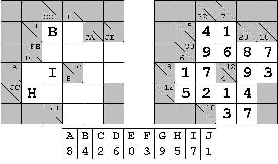

The above is an example of a cryptic kakuro (also known as cross sums, or even sums cross) puzzle, with its final solution on the right. (The common rules of kakuro puzzles can be found easily on numerous internet sites. Other related information can also be currently found at krazydad.com whose author has provided the puzzle data for this challenge.)
The downloadable text file ( kakuro200.txt ) contains the description of 200 such puzzles, a mix of 5x5 and 6x6 types. The first puzzle in the file is the above example which is coded as follows:
6,X,X,(vCC),(vI),X,X,X,(hH),B,O,(vCA),(vJE),X,(hFE,vD),O,O,O,O,(hA),O,I,(hJC,vB),O,O,(hJC),H,O,O,O,X,X,X,(hJE),O,O,X
The first character is a numerical digit indicating the size of the information grid. It would be either a 6 (for a 5x5 kakuro puzzle) or a 7 (for a 6x6 puzzle) followed by a comma (,). The extra top line and left column are needed to insert information.
The content of each cell is then described and followed by a comma, going left to right and starting with the top line.
X = Gray cell, not required to be filled by a digit.
O (upper case letter)= White empty cell to be filled by a digit.
A = Or any one of the upper case letters from A to J to be replaced by its equivalent digit in the solved puzzle.
( ) = Location of the encrypted sums. Horizontal sums are preceded by a lower case "h" and vertical sums are preceded by a lower case "v". Those are followed by one or two upper case letters depending if the sum is a single digit or double digit one. For double digit sums, the first letter would be for the "tens" and the second one for the "units". When the cell must contain information for both a horizontal and a vertical sum, the first one is always for the horizontal sum and the two are separated by a comma within the same set of brackets, ex.: (hFE,vD). Each set of brackets is also immediately followed by a comma.
The description of the last cell is followed by a Carriage Return/Line Feed (CRLF) instead of a comma.
The required answer to each puzzle is based on the value of each letter necessary to arrive at the solution and according to the alphabetical order. As indicated under the example puzzle, its answer would be 8426039571. At least 9 out of the 10 encrypting letters are always part of the problem description. When only 9 are given, the missing one must be assigned the remaining digit.
You are given that the sum of the answers for the first 10 puzzles in the file is 64414157580.
Find the sum of the answers for the 200 puzzles.
main: solve(file_url='https://projecteuler.net/project/resources/p424_kakuro200.txt') → █
Solution pending... the mathematician is still thinking.
Nothing here yet - come back when the dust has settled.